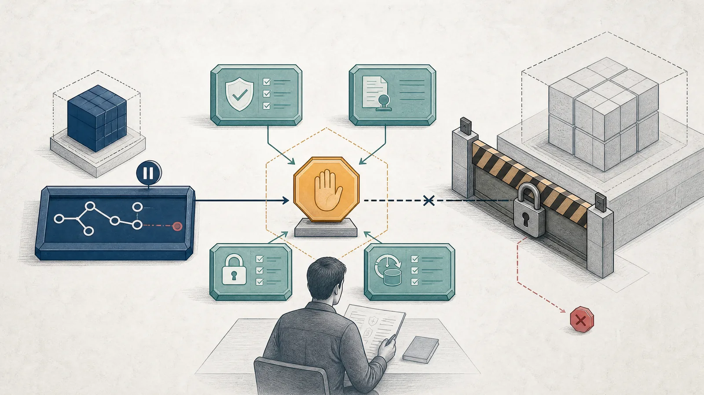

Deployment scenario, not an empirical result of this paper.
Should an agent merge and deploy the database migration it ranked first?
Coding agents, protected tests, static analysis, review agents, and cached repairs may all propose different changes. Selection identifies a winner; it does not establish authority to alter production state.

- Consequential action
- Merge and deploy a database migration or security patch.
- What can fail
- A convincing patch passes shallow checks but loses data, expands permissions, or follows prompt-injected repository instructions.
- Evidence before execution
- A frozen toolchain and selector, protected tests, rollback validation, provenance checks, and heldout adverse-change evidence.
- Review boundary
- Schema deletion, credential changes, production rollout, or insufficient task-local support.